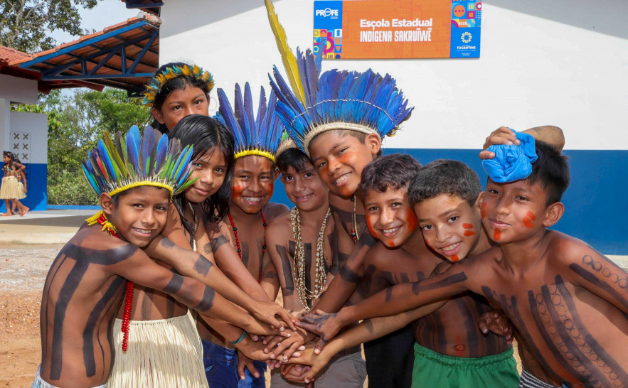

O povo tocantinense é uma mistura fascinante de origens diversas: indígenas nativos, nordestinos migrantes, sulistas empreendedores e pessoas de várias regiões do Brasil que encontraram no estado um novo lar. Essa rica diversidade criou uma cultura única, caracterizada por um profundo senso de acolhimento, hospitalidade e uma conexão íntima com a natureza exuberante do cerrado. Com aproximadamente 1,6 milhão de habitantes, sendo 65% da população vivendo em áreas urbanas, os tocantinenses mantém vivas as tradições rurais mesmo nas cidades mais desenvolvidas.

Povos Indígenas
O Tocantins abriga 8 etnias indígenas distintas, incluindo os Xerente, Karajá, Javaé, Xambioá, Krahô, Apinajé, Krikati e Avá-Canoeiro, totalizando cerca de 15.000 pessoas distribuídas em 12 reservas demarcadas. Estas comunidades mantém vivas tradições milenares, artesanato único, línguas ancestrais e uma profunda conexão espiritual com a terra. Os Karajá são famosos por suas bonecas de cerâmica Ritxòkò, enquanto os Xerente mantêm rituais como a Festa da Menina Moça e o Wapté Mnhõn (furação de orelhas).